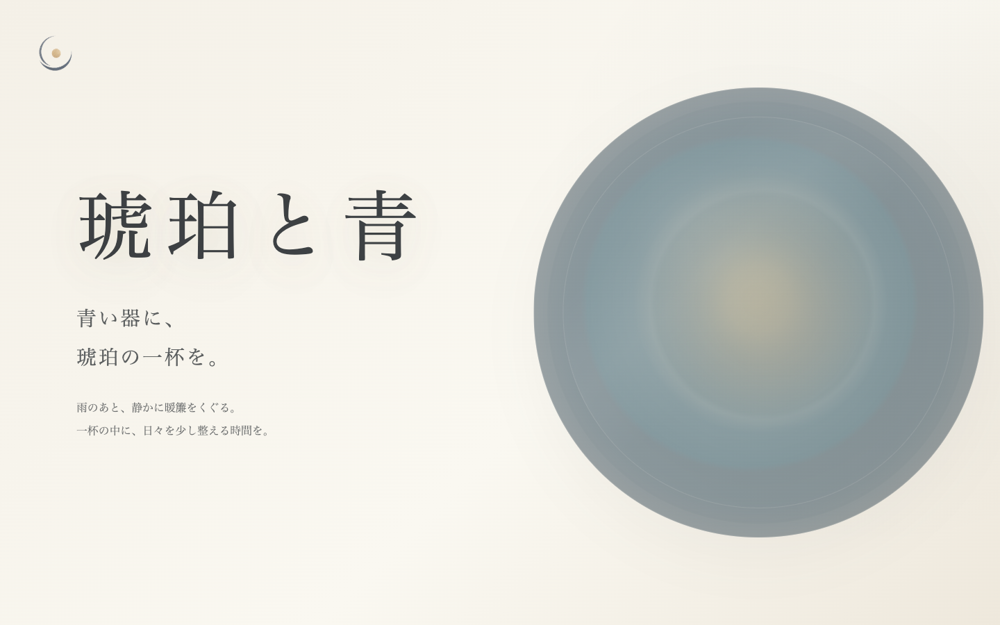
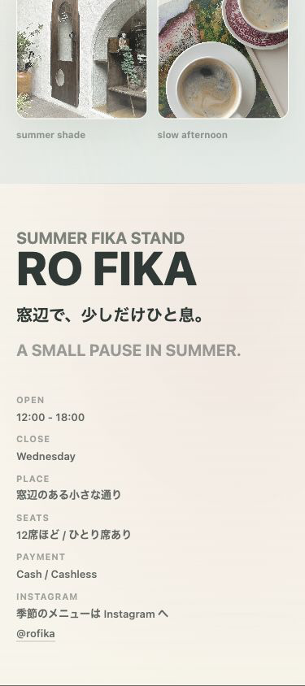

Web Design / Brand Site / Fictional Restaurant
琥珀と青
架空の中華そば店を想定したブランドサイト。青い器と琥珀色の一杯を軸に、余白、縦書き、横スクロールを使って、静かな余韻のあるWeb表現を目指しました。
Home
Web制作、AI活用、文章表現を学びながら、余白と言葉を大切にしたサイト制作に取り組んでいます。
Works
架空ブランドを題材に、余白や言葉、スクリーンショットの見せ方を整理した作品を掲載しています。

Web Design / Brand Site / Fictional Restaurant
架空の中華そば店を想定したブランドサイト。青い器と琥珀色の一杯を軸に、余白、縦書き、横スクロールを使って、静かな余韻のあるWeb表現を目指しました。

架空カフェサイト / Web Design / HTML CSS JavaScript
冷たい飲みものと焼き菓子をそばに、窓辺で静かにひと息つける時間をテーマにした、架空の小さな夏のカフェサイト。
Project Detail
架空の小さな夏のカフェとして設計した1ページサイトです。冷たい飲みものと焼き菓子をそばに、窓辺で静かにひと息つける時間をWeb上で表現しました。
Overview
ターゲットは、ひとりで静かにカフェ時間を過ごしたい人。短い日本語コピー、淡い夏の色味、窓辺の光を活かしたビジュアルで、気取りすぎず入りやすい空気を目指しました。

Menu / Info
最初は世界観を重視していましたが、マーケティング視点からMenuに価格帯を追加し、Footer InfoにOpen / Close / Place / Seats / Payment / Instagramを整理しました。「おしゃれさ」だけでなく「行けそう」「入りやすそう」という実用性を少し足しています。


Gallery / Motion
Galleryには実写真を使い、架空サイトでもカフェとしての実在感が出るようにしました。窓まわりにはdata-driftによる控えめな動きを入れていますが、Galleryには動きを付けず、写真の空気感と表示の安定性を優先しています。

Responsive
スマホ表示では、Heroの印象を保ちつつ、Galleryは2列、Footer Infoは1列で読めるように調整しました。横スクロールを出さず、短い説明とスクリーンショット中心で見せています。

